The Greenroom mark, how it is built, the colours and type around it, and the reasons behind each choice. Everything here comes from the same geometry as the files in Branding/greenroom-mark.
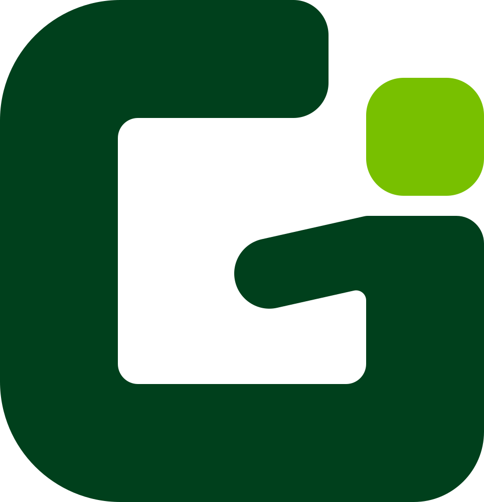
Greenroom sets up a screen-shared class in one click. The mark is the letter G drawn as one heavy stroke, with the teacher standing in it: a square head, a body the width of the stroke, and an arm raised to greet the room.
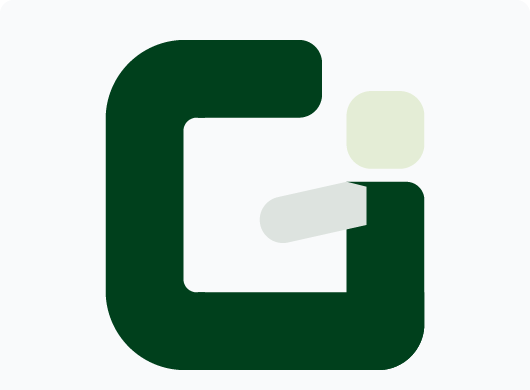
A single heavy G. Its right-hand side doubles as the body, so the letter and the person are one shape, never two characters side by side.
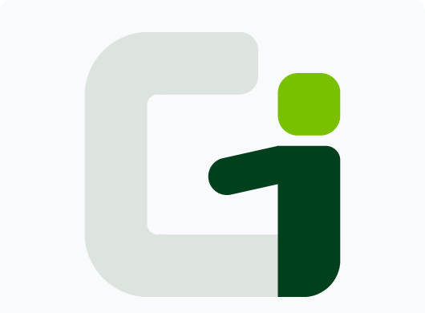
The lime square is the head, dropped into the G's mouth and centred over the body. It is the only lime in the mark and the first thing the eye finds.
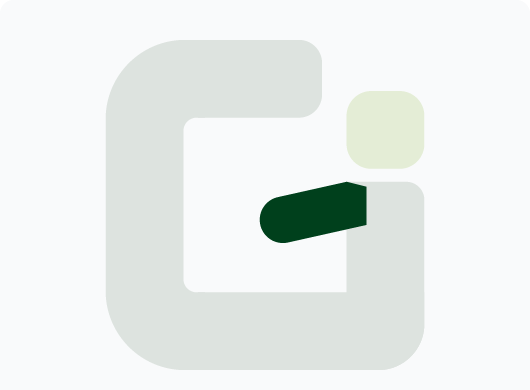
The arm rises from the shoulder into the counter, where a G's crossbar would be. Level, it read as a letter; raised, it reads as someone ready and welcoming.
Every part is sized from x, the stroke of the G. The head is x square and the body is x wide, so the person and the letter are drawn with the same pen.
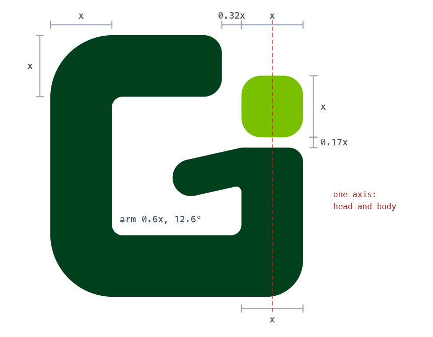
| Part | Measure |
|---|---|
| x | 235 on the mark's 1000 grid: the stroke of the G |
| Mark | 965 × 1000 (about 4.1x by 4.25x) |
| Head | x square, corner radius 75, on the same axis as the body |
| Body | x wide, 0.17x below the head, ending on the G's base |
| Arm | 0.6x thick, raised 12.6° from the shoulder, round tip |
| Corners | outer radius 240, bottom-right 140, inner 40 |
| Mouth | the top arm stops 0.32x short of the head |
Keep at least x (one head) clear on every side. The mark stays whole at 24 px tall on screen and 8 mm in print. Smaller than that, use the app icon's small-size artwork instead of the bare mark.
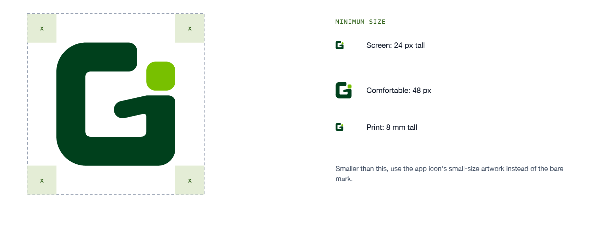
The mark is a deep structural green with a lime head. Text that has to be green uses its own, darker green. The same tokens run the site and the app.
The mark's structure, reversed grounds, high emphasis.
The head. Fills and tints only, never text.
Grounds, and the mark reversed on deep.
Links, buttons, eyebrows: green that is text.
Headings and primary text.
On white it measures 2.25:1, under the bar for text at every size. It is the head of the mark and a fill. Anything green with words in it uses #2F6118. Contrast figures are against white. No CMYK or Pantone values are defined yet; proof print from the hex values.
Use the colour mark wherever you can. The others exist for grounds and processes where two colours will not hold.
On white and light grounds. The default.
On deep green and dark grounds. The lime head stays lime.
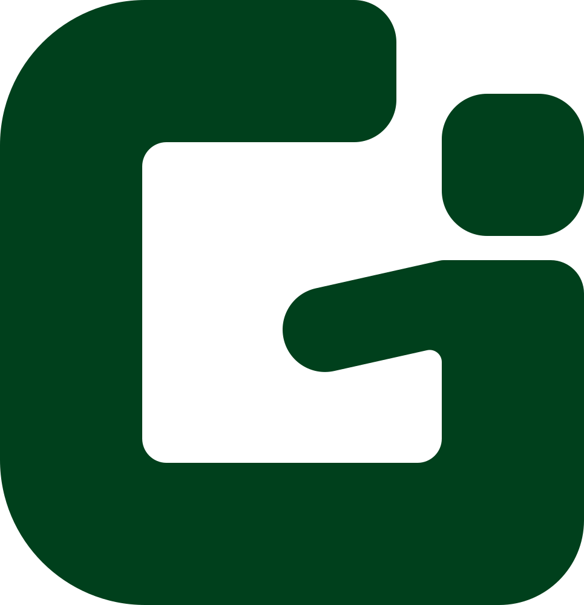
One-colour print, embossing, stamps, and on a lime ground.
One colour on dark or photographic grounds.
The reversed mark on a deep green tile: an 824-point tile on a 1024 canvas, corner radius 185, mark 520 wide. At 32 px and below the mark is drawn 620 wide, so the head and the arm stay open where the icon is seen most, in the Dock and in menus.
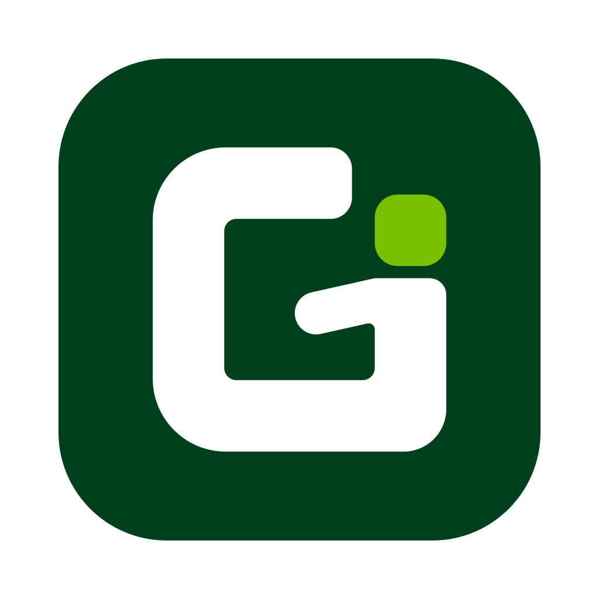
Shown at actual size. * The small-size artwork. The app ships them all in Greenroom.icns. The menu bar uses the mark alone, as a one-colour template image 16 points tall.
Greenroom is set in the system face, bold, tracked in slightly, in one colour: deep green on light, white on dark.
The space between the mark and the name is x. The name's capitals are 0.55 of the mark's height.
One colour. Never a two-tone "Green" and "room", and never lime.
The mark never stands in for the name's G. "reenroom" beside a mark reads as a misspelling, to screen readers and search engines as much as to people.
This site's header is the lockup at small size: a 26 px mark, a 19 px name, a 6 px gap.
Two voices, on purpose. Prose is the human speaking, in the Mac's own face. Mono is the machine: paths, ports, versions, anything you could paste into a terminal.
| Role | Size | Weight | Tracking | Line height |
|---|---|---|---|---|
| h1 | 30 to 46 px | 800 | −0.025em | 1.1 |
| h2 | 24 to 32 px | 800 | −0.02em | 1.15 |
| h3 | 15.5 to 17 px | 700 | 0 | 1.3 |
| Lede | 17.5 px | 400 | 0 | 1.6 |
| Body | 16 px | 400 | 0 | 1.6 |
| Caption | 14.5 px | 400 | 0 | 1.5 |
| Eyebrow | 10 to 13.5 px, mono, uppercase | 700 | 0.08em | 1.4 |
Display, body and UI: SF Pro through the system stack. Machine facts and section eyebrows: SF Mono. The eyebrow, like 01 · THE MARK, is the closest thing the brand has to a typographic signature.
Keep contrast high and grounds plain. On lime, switch to the deep-green-only mark so the head does not vanish. The mark only works as drawn: each of the mistakes below breaks the letter, the person, or both.
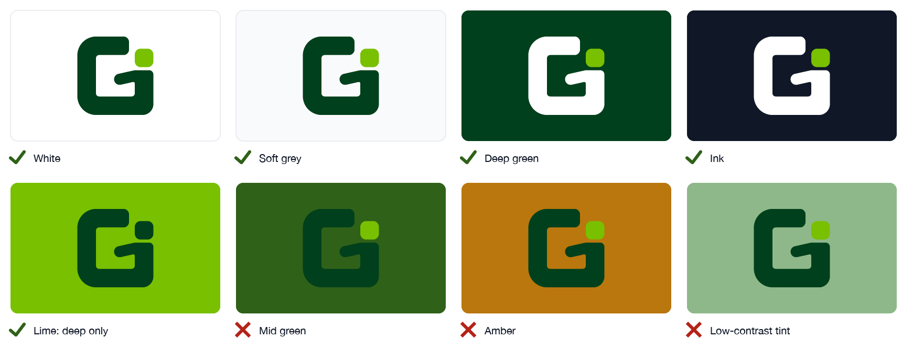
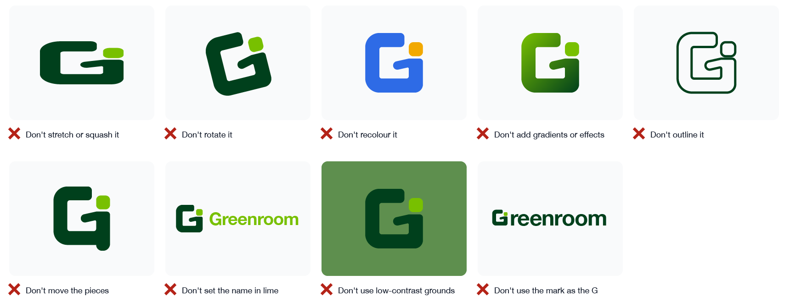
In the app the brand is the mark and the name. The controls stay quiet around it.
The app's tint is #5FA83C, not the logo's lime. The lime is the head of the mark and a fill.
In the main window's button row only Start is green. End Session, Record, Sessions and Screenroom are the standard neutral macOS button.
The mark is sized to the name beside it and has a reversed version for dark appearance. Both are vector, so they stay sharp at the size shown.
In light appearance, green text uses #2F6118. The accent is too light to read as text on white.
The mark alone, as a one-colour template image, so macOS tints it like its own items. Recording swaps it for a record glyph and REC: a change of shape, not of colour.
The brand's decisions and the reasons behind them, oldest first. The full log, including every product decision, lives in DESIGN.md.
| Date | Decision | Why |
|---|---|---|
| 2026-08-18 | Codify the shipped system instead of inventing a new one | Two live pages and a shipped app already shared a coherent language. A rebrand would have orphaned all three. |
| 2026-08-18 | The brand greens become a two-role pair | Four unrelated greens existed across the site, the app and the logo. The logo already paired a deep green with a lime highlight; splitting them by role also fixed link contrast. |
| 2026-08-18 | Lime is barred from text | It measures 2.25:1 on white, failing at every text size. It is safe as a fill. |
| 2026-08-18 | Keep the system font | This is a Mac utility, so SF reads as native to the platform the product ships on, not as a skipped typography decision. |
| 2026-08-18 | Mono becomes the eyebrow's voice | A typographic signature without leaving the platform font, and it matches the technical honesty of the privacy page. |
| 2026-09-24 | A new mark: one G with the teacher in it | The old mark was a gradient cascade of panes into a device, which broke the brand's own "no gradients" rule. The new one is flat, built on one unit, and survives at 16 px with its own small-size artwork. |
| 2026-09-24 | Rejected: anything that reads as two letters | A head on a narrow body beside a G read as "Ei", and later "Gi". A body dropping below the base read as "Gj". The chosen mark keeps the person inside one shape. |
| 2026-09-24 | The raised arm, not the level one | The designer moved the head into the G's mouth and raised the arm from the shoulder by hand. It gave the figure life without breaking the letter, and it became the final. |
| 2026-09-24 | The name in one deep green, always in full | The old two-tone name set "Green" in lime, which fails as text. The mark never replaces the name's G. |
| 2026-09-24 | The app accent stays #5FA83C | Tried in the app, the logo's lime as the tint turned every button, field and link bright lime, which read as highlighter rather than brand. |
| 2026-09-24 | Neutral secondary buttons | Under the green tint, secondary buttons drew a mint wash in light mode and competed with Start. Start is now the one green button. |
Everything is exact vector geometry, kept in Branding/greenroom-mark in the repository.
{kind=link}